6.2.4 子宫内膜蠕动（EP）
与引起痛经和分娩疼痛的表层子宫肌层收缩不同，子宫内膜蠕动源于子内膜下肌层的收缩。这种收缩产生类似于肠道蠕动的子宫内膜波运动（图6.3）。子内膜下肌层，也称为交界
6.2.4 Endometrial Peristalsis (EP)
Unlike the out-layer uterine muscle contractions that cause dysmenorrhea and labor pain, EP results from the contraction of the sub-endometrial myometrial layer. This contraction generates endometrial wave motion, similar to intestinal peristalsis (Fig. 6.3). The sub-endometrial myometrial layer, also known as the junctional
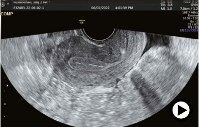
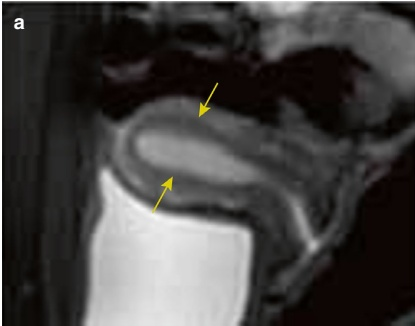
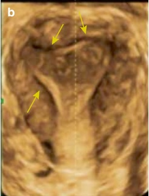
该区域由子宫内膜的基底层和子宫肌层的内三分之一组成。由于该区域的水分含量相对较低，因此在T2加权像上，磁共振成像（MRI）显示出与高信号的子宫内膜和均匀信号的外层子宫肌层不同的低信号带。
经阴道超声检查可以检测到子宫结合带（JZ）（图6.4）。该区域的收缩及其频率受卵巢产生的周期性激素波动调节。它们可能受到靠近子宫结合带（JZ）的病变的影响，例如子宫肌瘤、子宫内膜息肉和子宫腺肌病。子宫结合带（JZ）异常收缩可能导致不良妊娠结局。然而，由于评估子宫结合带（JZ）收缩耗时且劳动密集，目前尚未纳入常规妇科超声检查，临床指南中也未提及。
EP以子宫结合带（JZ）的收缩开始。研究已根据其方向性将EP波分为五种类型：(a) 从宫颈向穹窿移动的蠕动波；
zone, consists of the basal layer of the endometrium and the inner third of the myometrium. Due to this region's relatively low water content, magnetic resonance imaging (MRI) shows a low-signal band distinct from the high-signal endometrium and the homogeneous-signal outer myometrium on T2-weighted images.
Transvaginal ultrasonography can detect the junctional zone (Fig. 6.4). Contractions of this zone and their frequency are regulated by cyclic hormonal fluctuations produced by the ovaries. They can be influenced by lesions near the junctional zone, such as uterine fibroids, endometrial polyps, and adenomyosis. Abnormal contractions of the junctional zone may lead to poor pregnancy outcomes. However, the assessment of junctional zone contractions is currently not part of routine gynecologic ultrasound practices due to its time-consuming and labor-intensive nature, and it is not addressed in clinical guidelines.
EP begins with the contraction of the junctional zone. Studies have categorized EP waves into five types based on their directionality: (a) peristalsis waves moving
从穹窿向宫颈移动的蠕动波；(c) 同时从子宫穹窿和宫颈两个方向发出的波；(d) 方向不定的随机蠕动波；以及(e)无运动 [21, 22]。
宫颈分泌物（EP）在正常的生殖功能和胚胎着床中起着至关重要的作用。在早期卵泡期，EP的特点是从子宫底到宫颈移动的波浪，主要促进分泌物的排出并预防微生物感染。随着卵泡的发育和雌激素水平的升高，EP会增强，在排卵期达到高峰，此时波浪主要从宫颈指向子宫底，有助于精子的运输。排卵后，EP频率下降，直到黄体中期，随机方向的波浪占主导地位，为胚胎充分与子宫内膜结合提供了时间和机会。在晚期黄体期，子宫内膜相对静止，这对胚胎着床有利 [23]。
子宫内膜电活动（EP）的紊乱，包括蠕动过度和幅度过大，会不利于胚胎着床并增加异位妊娠的几率。研究表明，在胚胎移植前，EP频率低于每分钟两波的女性有最高的临床妊娠率，而频率超过每分钟三波的女性妊娠率则显著降低 [24]。
目前，EP波是通过经阴道超声目视检测的，但结果高度主观且重复性差，操作耗时，难以在常规临床实践中采用。因此，需要更准确的检测设备和分析方法来进一步探索该领域。
6.3 超声评估子宫内膜容积的血流动力学指标
Goswamy于1988年首次将子宫灌注不良确定为女性不育的潜在原因。随着辅助生殖需求的增加，通过超声评估子宫灌注的临床研究越来越普遍。一些研究人员认为，使用多普勒超声评估子宫灌注可能是一个有用的内膜容积指标。该评估包括使用多普勒超声测量子宫动脉、子宫内膜和子宫内膜下血流。
6.3.1 子宫血管的解剖学特征
子宫动脉起源于髂内动脉的腹支，沿子宫侧壁向上走行，发出弓状动脉。这些弓状动脉随后在子宫肌层分支为径向动脉，再进一步分化为基底动脉和螺旋动脉，分别位于子宫内膜的基底层和功能层（图6.5）。子宫基底动脉供应子宫内膜的基底层，不受激素波动的影响。相比之下，
from the cervix to the fundus; (b) peristalsis waves moving from the fundus to the cervix; (c) waves emanating simultaneously from both the uterine fundus and cervix in opposite directions; (d) random peristalsis waves of variable directions; and (e) no motion [21, 22].
EP plays a crucial role in normal reproductive function and embryo implantation. In the early follicular phase, EP is characterized by waves moving from the uterine fundus to the cervix, primarily promoting the discharge of secretions and preventing microbial infections. As follicles develop and estrogen levels increase, EP intensifies, reaching its peak in the periovulatory period, with waves predominantly directed from the cervix to the fundus, which aids in the sperm transport. Following ovulation, EP frequency decreases, and random waves in opposite directions dominate until the midluteal phase, providing time and opportunity for the embryo to fully engage with the endometrium. During the late luteal phase, the endometrium becomes relatively quiescent, which is favorable for embryo implantation [23].
Dysregulation of EP, including excessive frequency and amplitude of peristalsis, can adversely affect embryo implantation and increase the likelihood of ectopic pregnancy. Research indicates that the highest clinical pregnancy rates are found in women with an EP frequency of less than two waves per minute prior to embryo transfer, whereas those with more than three waves per minute have significantly lower pregnancy rates [24].
Currently, EP waves are detected visually by transvaginal ultrasound, but the results are highly subjective and poorly reproducible, and the procedure is time-consuming, making it challenging to adopt in routine clinical practice. Therefore, more accurate testing equipment and analytical methods are needed to further explore this area.
6.3 Hemodynamic Markers for Evaluating ER by Ultrasound
Poor uterine perfusion was first identified by Goswamy in 1988 as a potential cause of female infertility. With the increasing demand for assisted reproduction, clinical studies evaluating uterine perfusion via ultrasound have become more widespread. Some researchers suggest that Doppler ultrasound assessment of uterine perfusion may be a useful ER marker. This evaluation includes using Doppler ultrasound to measure uterine arterial, endometrial, and sub-endometrial blood flows.
6.3.1 Anatomical Characteristics of Uterine Vessels
The uterine artery originates from the anterior trunk of the internal iliac artery and ascends along the lateral wall of the uterus, giving rise to the arcuate arteries. These arcuate arteries then branch into radial arteries within the myometrium, which further divide into basal arteries and spiral arteries in the basal and functional layers of the endometrium (Fig. 6.5). The uterine basal arteries supply the basal layer of the endometrium and are not influenced by hormonal fluctuations. In contrast, the
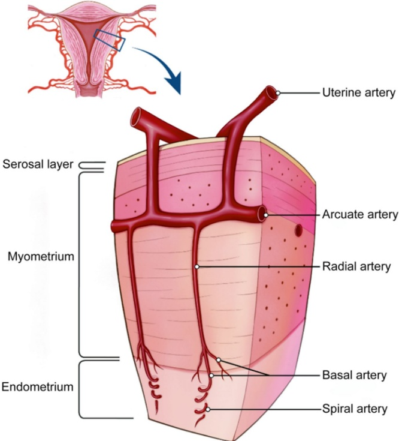
子宫螺旋动脉深入到子宫内膜的功能层，其直径会根据卵巢激素水平的变化而变化。子宫螺旋动脉在妊娠期间会发生生理性改变，以支持胚胎生长。
6.3.2 子宫动脉血流
1. 超声检查
进行经阴道超声检查时，将探头定位以获得子宫的矢状面。将彩色多普勒采样框置于宫颈和子宫交界处，然后左右移动探头以观察双侧子宫动脉。彩色多普勒可显示子宫动脉内明亮、迂曲、管状的血流信号（图 6.6）。
uterine spiral arteries extend deep into the functional layer of the endometrium, with their diameter varying in response to ovarian hormone levels. The uterine spiral arteries undergo physiological changes during pregnancy to support embryo growth.
6.3.2 Blood Flow in the Uterine Artery
1. Ultrasound scanning
During transvaginal ultrasonography, position the transducer to obtain the midsagittal plane of the uterus. Place the color Doppler sampling frame at the junction of the cervix and uterus, and then move the transducer side to side to visualize the bilateral uterine arteries. Color Doppler will reveal bright, tortuous, tubular flow signals within the uterine arteries (Fig. 6.6).
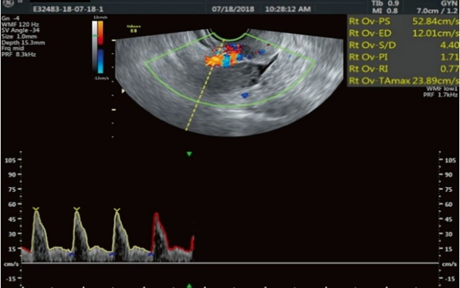
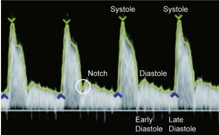
- 子宫动脉血流波形
子宫动脉血流波形根据现有文献分为四种类型（图 6.7 和 6.8）：
C 型：持续前向血流伴早期舒张期凹陷
A 型：存在早期舒张期凹陷和晚期舒张末期血流消失
O1型：仅有收缩期血流，无舒张期血流
O2型：存在反向早期舒张期血流，缺乏晚期舒张期血流
子宫动脉波形呈C型被认为是正常的，双侧C型波形提示子宫灌注良好。一侧为C型、另一侧为A型的组合提示子宫灌注受损但仍尚可。任何O型（O1或O2，单侧或双侧）或双侧A型
- Waveforms of blood flow in the uterine artery
Uterine artery blood flow waveforms are classified into four types based on reported literature (Figs. 6.7 and 6.8):
Type C: Continuous forward flow with an early diastolic notch
Type A: Presence of an early diastolic notch and loss of late diastolic flow
Type O1: Only systolic blood flow with no diastolic flow
Type O2: Presence of reverse early diastolic flow and absence of late diastolic flow
Type C uterine artery waveforms are considered normal, with bilateral type C waveforms indicating favorable uterine perfusion. A combination of type C on one side and type A on the other suggests impaired, though still adequate, uterine perfusion. Any type O (O1 or O2, unilateral or bilateral) or bilateral type A
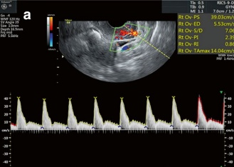
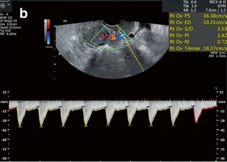
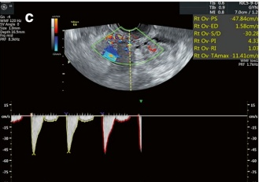
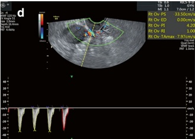
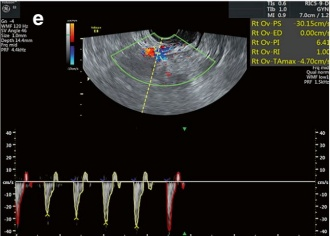
波形提示不良血流，这些血管缺乏晚期舒张期血流与高阻力相关 [25]。
3. 子宫动脉血流参数
子宫动脉血流参数包括搏动指数（PI）、阻力指数（RI）、收缩期/舒张期比值（S/D）、峰值收缩期速度（PSV）和末期舒张期速度（EDV），定义如下：
• RI = (PSV - EDV)/PSV
PI = (PSV - EDV)/平均血流速度
S/D = PSV/EDV
waveforms indicate adverse blood flow, with the absence of late diastolic blood flow associated with high resistance in these vessels [25].
3. Parameters of uterine artery blood flow
Uterine artery blood flow parameters include the pulse index (PI), resistance index (RI), systolic-diastolic ratio (S/D), peak systolic velocity (PSV), and end-diastolic velocity (EDV), defined as follows:
• RI = (PSV - EDV)/PSV
PI = (PSV - EDV)/mean blood velocity
S/D = PSV/EDV
| 项目 | 月经周期 | 生长期 | 黄体期 |
| RI | 0.86 $ \pm $ 0.04 | 0.88 $ \pm $ 0.05 | 0.84 $ \pm $ 0.06 |
| PI | <3.0 | <3.0 | 2.08 $ \pm $ 0.47 |
| S/D值 | <8.0 | <3.0 | 5.73 $ \pm $ 1.47 |
| 项目 | 早期妊娠 | 中孕期 | 晚孕期 |
| RI | <0.75 | <0.73 | <0.58 |
| PI | <2.25 | <1.5 | <0.82 |
| S/D值 | <6.0 | <3.6 | <2.6 |
这些参数必须在三个完整的连续心动周期内测量，以准确评估子宫血流阻力。
从理论上讲，较低的PI和RI值表明血管阻力减小和子宫灌注改善[26]。雌激素水平在排卵前2-3天达到峰值，导致血管阻力降低。 排卵后，黄体期中期孕酮水平逐渐升高，促进平滑肌松弛。雌激素和孕酮共同作用，进一步降低子宫血流阻力（表 6.1）[27]。
非孕期女性子宫动脉血流波形通常表现为高阻力、低舒张末期血流，并伴有早期舒张凹陷。这种早期舒张凹陷在约50%的早期妊娠中持续存在。 在妊娠第14至16周之间，高阻力血流转变为低阻力模式，舒张期血流增加以满足胎儿生长发育的需求。 子宫动脉血管阻力从孕早期到孕中期持续下降，妊娠晚期变化极小（表 6.2）[27]。
4. 子宫动脉血流参数和ER
多项研究强调了子宫动脉参数在评估ER的预测价值。RI的计算公式为RI = (PSV - EDV)/PSV，其范围为0.0到1.0，但当出现反向舒张血流（负EDV）时，RI会超过1。 较高的EDV对应较低的RI，表明低阻力血流，这与更好的子宫灌注相关。相反，较低的EDV会导致较高的RI，反映了血管阻力的增加。 对血流的阻力增加也可能表现为较高的PI [28]。
多项临床研究表明，妊娠组的PI和RI值明显低于非妊娠组 [29, 30]。 此外，对组织切片的免疫组化分析显示了子宫动脉阻力和ER生物标志物之间的相关性 [30]。 早期的研究将子宫动脉PI分为低（0–1.99）、中（2.00–2.99）和高（$ \geq $3.00）三组，其中低PI值与更好的妊娠结局相关
| Item | Menstrual period | Proliferative phase | Luteal phase |
| RI | 0.86 $ \pm $ 0.04 | 0.88 $ \pm $ 0.05 | 0.84 $ \pm $ 0.06 |
| PI | <3.0 | <3.0 | 2.08 $ \pm $ 0.47 |
| S/D value | <8.0 | <3.0 | 5.73 $ \pm $ 1.47 |
| Item | Early pregnancy | Midpregnancy | Late pregnancy |
| RI | <0.75 | <0.73 | <0.58 |
| PI | <2.25 | <1.5 | <0.82 |
| S/D value | <6.0 | <3.6 | <2.6 |
These parameters must be measured over three complete consecutive cardiac cycles to accurately evaluate resistance to uterine blood flow.
Theoretically, lower PI and RI values indicate reduced vascular resistance and better uterine perfusion [26]. Estrogen levels peak 2–3 days before ovulation, resulting in decreased vascular resistance. After ovulation, progesterone levels gradually rise during the midluteal phase, promoting smooth muscle relaxation. Together, estrogen and progesterone contribute to further reduced resistance to uterine blood flow (Table 6.1) [27].
The uterine artery blood flow waveform in nonpregnant women is typically characterized by high resistance and low diastolic flow, accompanied by an early diastolic notch. This early diastolic notch persists in approximately 50% of early pregnancies. Between 14 and 16 weeks of gestation, the high-resistance blood flow transitions to a low-resistance pattern with increased diastolic flow to meet the demands of fetal growth and development. Uterine artery vascular resistance continues to decline from early to midpregnancy, with minimal changes observed during late pregnancy (Table 6.2) [27].
4. Uterine artery blood flow parameters and ER
Numerous studies have highlighted the predictive value of uterine artery parameters in assessing ER. The RI, calculated as RI = (PSV - EDV)/PSV, ranges from 0.0 to 1.0, except in cases of reversed diastolic blood flow (negative EDV), where RI exceeds 1. A higher EDV corresponds to a lower RI, indicating low-resistance blood flow, which is associated with better uterine perfusion. Conversely, low EDV results in higher RI, reflecting increased vascular resistance. Increased resistance to blood flow may also be indicated by a higher PI [28].
Several clinical studies have demonstrated significantly lower PI and RI values in the pregnant group compared to the nonpregnant group [29, 30]. Additionally, immunohistochemical assays of tissue sections have shown correlations between uterine arterial resistance and biomarkers of ER [30]. Early studies categorized uterine artery PI into low (0–1.99), medium (2.00–2.99), and high ( $ \geq $3.00) groups, with low PI values associated with better pregnancy out-
在 [28, 31, 32]。此外，当 PI 超过 3.00 和 RI 超过 0.92 时，妊娠率显著降低，在胚胎移植当天，当 PI 超过 3.30 和 RI 超过 0.95 时，最低。值得注意的是，总周期中有 9% 检测到高阻抗（PI > 3.30 和 RI > 0.95）[33]。
尽管有这些发现，文献中也包含一些结果相矛盾的研究。一项荟萃分析显示，胚胎移植当天 PI < 3 与妊娠结局改善相关。然而，孕组和非孕组子宫动脉 PI 和 RI 的差异在统计学上不显著 [8]。
6.3.3 子宫内膜和子宫内膜下血流
子宫动脉不仅为子宫内膜供血，还为其他邻近组织如子宫肌层、输卵管、卵巢和阴道提供血液。因此，子宫动脉的血流参数可能不能精确反映子宫内膜的局部灌注情况。 相比之下，评估子宫内膜和下层内膜的血流能提供一个更具体、更客观的、直接与子宫内膜相关的血液供应情况。
1. 子宫内膜和子宫内膜下层二维彩色多普勒超声
二维（2D）彩色多普勒超声是用于观察子宫内膜螺旋动脉并测量其频谱特征的常用工具。评估的参数包括以下几项：
(a) 子宫内膜血流类型：根据血流信号的分布进行分类。
(b) 子宫内膜和子宫内膜下血流指标包括PI、RI、S/D、PSV和EDV。
子宫内膜和子宫内膜下血流的分类通常遵循 Applebaum 的子宫评分系统，该系统将血流分为三类（图 6.9、6.10、6.11 和 6.12）：
(a) I 型：观察到子宫内膜外但不在子宫内膜内的血流信号（即在子宫内膜下区域存在，但在基底层和功能层缺失）。
(b) II型：血管穿透子宫内膜外低回声区，但未进入其内低回声区（即基底层有血流，功能层无血流）。
(c) III型：血管到达子宫内膜内低回声区，提示功能层有血流。
研究已将不良的子宫内膜和深层子宫内膜血供与不良妊娠结局联系起来。研究报告称，在子宫内膜和深层子宫内膜均存在血流信号与47.8%的妊娠率相关。 相比之下，当血流信号仅限于子宫内膜下时，妊娠率下降至29.7%，而在两个区域均无血流信号的情况下，则骤降至7.5%。后者的患者
comes [28, 31, 32]. Furthermore, pregnancy rates were significantly lower when PI exceeded 3.00, and RI surpassed 0.92, with the lowest rates observed when PI exceeded 3.30, and RI exceeded 0.95 on the day of embryo transfer. Notably, high impedance (PI > 3.30 and RI > 0.95) was detected in 9% of total cycles [33].
Despite these findings, the literature also contains studies with conflicting results. A meta-analysis revealed that a PI < 3 on the day of embryo transfer was associated with improved pregnancy outcomes. However, the differences in uterine artery PI and RI between pregnant and nonpregnant groups were not statistically significant [8].
6.3.3 Endometrial and Sub-endometrial Blood Flow
The uterine artery supplies blood not only to the endometrium but also to other adjacent tissues, including the myometrium, fallopian tubes, ovaries, and vagina. As a result, uterine artery flow parameters may not precisely reflect the localized perfusion of the endometrium. In contrast, the assessment of endometrial and sub-endometrial blood flow provides a more specific and objective profile of the blood supply directly related to the endometrium.
1. 2D color Doppler ultrasound of endometrium and sub-endometrium
Two-dimensional (2D) color Doppler ultrasound is a widely utilized tool for visualizing the spiral arteries of the endometrium and measuring their spectral profiles. The parameters assessed include the following:
(a) Endometrial blood flow type: A classification based on the distribution of blood flow signals.
(b) Endometrial and sub-endometrial blood flow indices include PI, RI, S/D, PSV, and EDV.
Endometrial and sub-endometrial blood flow classification often follows Applebaum's uterine scoring system, which categorizes blood flow into three types (Figs. 6.9, 6.10, 6.11, and 6.12):
(a) Type I: Blood flow signals are observed outside the endometrium but not within it (i.e., present in the sub-endometrial area but absent in the basal and functional layers).
(b) Type II: Blood vessels penetrate the outer hypoechoic region of the endometrium but do not enter its inner hypoechoic area (i.e., blood flow is present in the basal layer but absent in the functional layer).
(c) Type III: Blood vessels reach the inner hypoechoic area of the endometrium, indicating blood flow in the functional layer.
Studies have linked poor endometrial and sub-endometrial blood supply to adverse pregnancy outcomes. Research reports that the presence of blood flow signals in both the endometrium and sub-endometrium is associated with a pregnancy rate of 47.8%. In comparison, the pregnancy rate drops to 29.7% when blood flow signals are confined to the sub-endometrium and plummets to 7.5% in cases where blood flow signals are absent in both regions. Patients in the latter
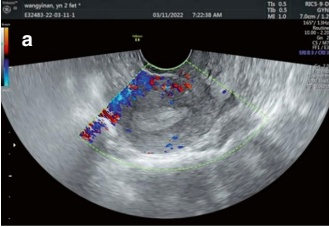
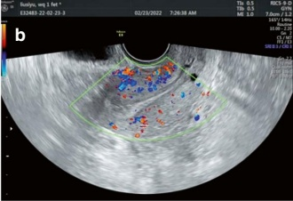
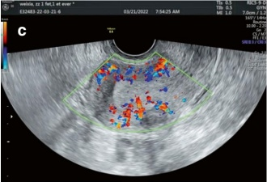
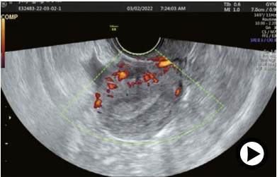
组通常表现为高龄妊娠、子宫内膜变薄和子宫动脉阻力增高 [34–36]。
对子宫内膜螺旋动脉血流参数的预测价值的研究结果不一。 Battaglia和Kupesic的研究表明，妊娠组子宫内膜螺旋动脉的PI值明显低于非妊娠组，这表明更好的血流灌注可能是成功妊娠的一个潜在因素[37, 38]。 同时，Seifeldin 等人使用 Slowflow 方法评估胚胎移植日子宫内膜螺旋动脉的研究报告了较高的 RI 值。
group often exhibit advanced maternal age, thin endometrium, and elevated uterine artery resistance [34–36].
Research on the predictive value of endometrial spiral artery blood flow parameters has yielded mixed results. Studies by Battaglia and Kupesic demonstrated that PI values of the endometrial spiral arteries were significantly lower in the pregnant group compared to the nonpregnant group, indicating better blood perfusion as a potential factor for successful pregnancy [37, 38]. Meanwhile, a study by Seifeldin et al., using the Slowflow method to assess endometrial spiral arteries on embryo transfer day, reported higher RI values.
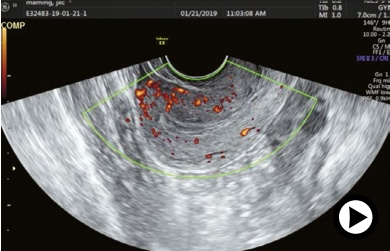
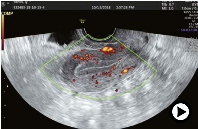
(0.68 vs. 0.65) 和 S/D 比值 (3.91 vs. 3.17) 在妊娠组与非妊娠组相比 [39]。这一发现表明，增加的阻力不一定排除成功的妊娠结局。然而，其他研究得出结论，子宫内膜螺旋动脉的频谱多普勒超声参数——如 PI、RI 和 S/D——不能预测体外受精治疗后的妊娠结局 [40]。
- 子宫内膜和子宫内膜下方的 3D 彩色多普勒超声参数
(a) 3D彩色多普勒超声参数概述
三维（3D）彩色多普勒超声相比二维多普勒，具有更高的灵敏度，尤其适用于检测低速血流和观察小血管。该方法可定量评估内膜和子宫内膜下区域的信号强度，从而对血管化和灌注提供详细评估。
子宫内膜下区域是子宫内膜基底层和子宫肌层之间的低回声区。文献中，该区域通常测量于距离子宫内膜边缘5 mm半径范围内（图6.13）[41]。
(0.68 vs. 0.65) and S/D ratio (3.91 vs. 3.17) in the pregnant group compared to the nonpregnant group [39]. This finding suggests that increased resistance might not necessarily preclude a successful pregnancy outcome. However, other studies have concluded that spectral ultrasound parameters of endometrial spiral arteries—such as PI, RI, and S/D—do not predict pregnancy outcomes after IVF treatment [40].
- 3D power Doppler ultrasound parameters of the endometrium and sub-endometrium
(a) Overview of 3D power Doppler ultrasound parameters
Three-dimensional (3D) power Doppler ultrasound offers enhanced sensitivity compared to 2D Doppler, especially for detecting low-velocity blood flow and visualizing small blood vessels. This method quantitatively assesses signal intensity in both the endometrial and sub-endometrial regions, providing a detailed evaluation of vascularization and perfusion.
The sub-endometrial region is the hypoechoic zone between the basal layer of the endometrium and the myometrium. In the literature, this region is typically measured within a 5 mm radius from the endometrial borders (Fig. 6.13) [41].
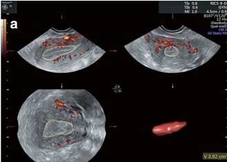
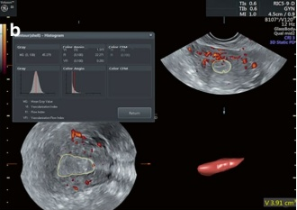
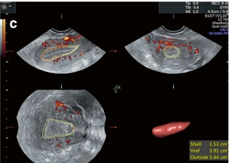
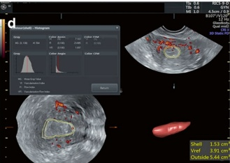
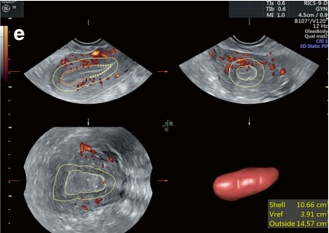
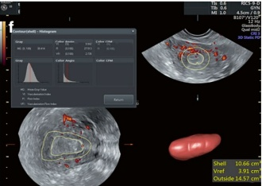
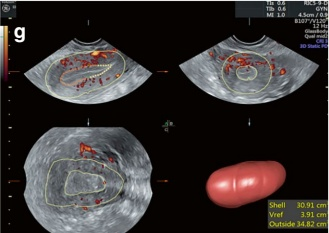
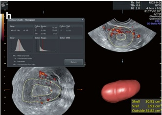
3D彩色多普勒超声的关键参数如下：
- 血运指数（VI）
定义：代表感兴趣区域内血管彩色体素的百分比
意义：指示目标组织中血管的密度，反映血管丰富程度或稀疏程度
2. 血流指数（FI）
定义：衡量目标体积内血流的平均强度，由加权平均颜色体素表示
意义：这反映了在三维扫描过程中流经血管的红细胞数量
3. 血管化血流指数（VFI）
定义：通过将VI和FI相乘得出的复合指标
意义：结合了血管密度和血流强度的信息，提供了对血液供应的全面评估。研究表明，子宫内膜和子宫内膜下血流参数在整个月经周期中表现出连续变化，与激素波动密切相关：
分泌期：此阶段血流逐渐增加，与雌激素水平的升高相一致。雌激素在排卵前约3天达到峰值，促进子宫内膜血管化和灌注增强（图6.14）。
排卵后：排卵后约5天，雌激素水平降至最低点，而孕酮水平上升。
晚期分泌期：尽管雌激素和孕激素在中期分泌期后均下降，但通过彩色多普勒超声测得的子宫内膜血流参数持续增加。
血流的这种持续升高可能归因于晚期分泌期内子宫内膜组织密度的增加和螺旋动脉曲率的改变，以及肾素-血管紧张素系统在调节月经中的作用 [42]。
(b) 使用彩色多普勒超声测量内膜和下层内膜血流（以 GE Voluson E8 为例）
- 患者准备和体位摆放
患者应在检查前排空膀胱，并取膀胱截石位。
使用腔内超声探头对子宫和双侧附件区进行常规扫描。
2. 成像设置
- 首先选择子宫的矢状面，该平面清晰显示内膜轮廓。这将作为扫描的起始点。
• 使患者和超声探头保持静止。
• 打开彩色多普勒（PD）模式和三维成像功能。
The key parameters of 3D power Doppler ultrasound are as follows:
- Vascularization Index (VI)
Definition: Represents the percentage of intravascular color-coded voxels within the area of interest
Significance: Indicates the density of blood vessels in the target tissue and reflects the vascular abundance or sparsity
2. Flow Index (FI)
Definition: Measures the average intensity of blood flow within the target volume, represented by the weighted mean color voxel
Significance: This reflects the number of red blood cells passing through the vessels during the 3D scanning
3. Vascularization Flow Index (VFI)
Definition: A composite measure derived by multiplying VI and FI
Significance: Combines information on both vascular density and flow intensity, providing a comprehensive assessment of blood supply. Studies have demonstrated that endometrial and sub-endometrial blood flow parameters exhibit continuous changes throughout the menstrual cycle, closely corresponding to hormonal fluctuations:
Proliferative phase: Blood flow gradually increases during this phase, in line with rising estrogen levels. Estrogen peaks approximately 3 days before ovulation, promoting enhanced vascularization and perfusion of the endometrium (Fig. 6.14).
Post ovulation: About 5 days after ovulation, estrogen levels drop to their lowest point while progesterone levels rise.
Late secretory phase: Despite the decline in both estrogen and progesterone after the midsecretory phase, blood flow parameters of the endometrium, as measured by power Doppler ultrasound, continue to increase.
This sustained rise in blood flow may be attributed to the increased endometrial tissue density and spiral arterial curvature during the late secretory phase, as well as to the activity of the renin-angiotensin system in regulating menstruation [42].
(b) Measurement of endometrial and sub-endometrial blood flow using power Doppler ultrasound (GE Voluson E8 as an example)
- Patient preparation and positioning
The patient should empty her bladder before the procedure and assume the lithotomy position.
Routine scanning of the uterus and bilateral adnexal regions is performed using an intracavitary volume transducer.
2. Imaging setup
- Start by selecting the midsagittal plane of the uterus, which clearly shows the endometrial contour. This will serve as the starting point for the scan.
• Keep both the patient and the ultrasound probe stationary.
• Turn on the Power Doppler (PD) mode and the 3D imaging function.
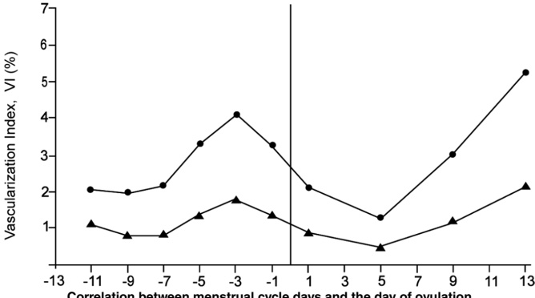
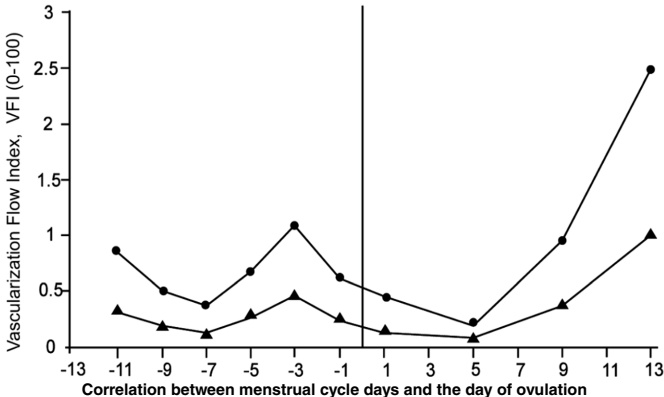
- 确保整个子宫包含在采样框内，然后进行子宫的3D扫描。
- 子宫内膜三维成像
- 描绘子宫内膜边缘在肌层-内膜交界处的3D平面，从宫底到宫颈内口。
- Ensure the entire uterus is included in the sampling frame and proceed with performing a 3D scan of the uterus.
- 3D imaging of the endometrium
- Outline the 3D plane of the endometrial margin at the myometrial-endometrial interface, from the fundus to the internal cervical os.
使用VOCAL（虚拟器官计算机辅助分析）功能通过多个平行切面进行扫描。这将自动生成内膜体积。
- 使用“直方图”功能提取相关的子宫内膜血流参数。
- 子宫内膜下血流测量
根据生成的子宫内膜体积，选择“外侧”选项。
手动选择子宫内膜下区域 1 至 10 mm 的范围，以自动计算该区域的血流参数。
(c) 功率多普勒超声参数和ER
对接受IVF治疗并在hCG给药当天进行3D彩色多普勒超声的研究显示，子宫内膜的VFI具有更高的预测价值，且VFI大于0.24的患者观察到更好的妊娠结局[41]。 类似地，胚胎移植当天较高的VI、FI和VFI值与更高的妊娠率相关，特定的临界值可预测妊娠：VI > 0.95，FI > 12.94，VFI > 0.15。 然而，子内膜下血流参数的预测价值很小[43]。
2018年的一项荟萃分析显示，在胚胎移植当天，与非妊娠组相比，妊娠组的子宫内膜血流参数，包括VI、FI和VFI，显著更高。 然而，在hCG给药当天未观察到这些参数的显著差异。 此外，在hCG注射日和胚胎移植日，子宫内膜下血流FI在妊娠组中高于非妊娠组。 未见两组在子内膜下VI、FI和VFI的冷冻-复苏循环中存在显著差异 [44]。
相比之下，一项来自2019年的荟萃分析得出了不同的结论。在hCG给药当天，妊娠组的子内膜下VI低于非妊娠组，而子内膜下FI高于非妊娠组。 在胚胎移植当天，妊娠组的内膜VI和VFI更高，而两组之间的子内膜血流参数无显著差异[8]。表6.3总结了这两项meta分析的结果。
总而言之，尽管三维彩色多普勒超声可以提供对区域子宫内膜灌注的定量和高分辨率可视化，但该检查的临床意义仍然存在争议。 除了操作者、设备和检查时间等主观和客观因素的影响外，个体化的宫体位置和内膜检测深度在大型临床研究中很少被分析和讨论。 不同的子宫位置可能会影响血流参数的结果。超声由于检测深度增加导致的衰减也会显著降低内皮血流读数。
across multiple parallel sections using the VOCAL (Virtual Organ Computer-Aided Analysis) function. This will automatically generate the endometrial volume.
- Use the “Histogram” function to extract the relevant endometrial blood flow parameters.
- Sub-endometrial blood flow measurement
Based on the generated endometrial volume, select the "OUTSIDE" option.
Manually select an area between 1 and 10 mm in the sub-endometrial region to automatically calculate the flow parameters in that area.
(c) Power Doppler ultrasound parameters and ER
A study of 3D power Doppler ultrasound performed on the day of hCG administration in patients treated with IVF demonstrated a greater predictive value of the VFI of the endometrium, and better pregnancy outcomes were observed in patients with a VFI greater than 0.24 [41]. Similarly, higher VI, FI, and VFI values on the day of embryo transfer were linked to higher pregnancy rates, with specific cutoff values predicting pregnancy: VI > 0.95, FI > 12.94, and VFI > 0.15. However, the sub-endometrial blood flow parameters showed little predictive value [43].
A meta-analysis in 2018 showed that endometrial blood flow parameters, including VI, FI, and VFI, were significantly higher in the pregnant group compared to the nonpregnant group on the day of embryo transfer. However, no significant difference in these parameters was observed on the day of hCG administration. Additionally, sub-endometrial blood flow FI was higher in the pregnant group than in the nonpregnant group both on the day of hCG administration and on the day of embryo transfer. No significant differences between the two groups in freeze-thaw cycles were observed in sub-endometrial VI, FI, and VFI [44].
In contrast, a meta-analysis from 2019 found different conclusions. On the day of hCG administration, sub-endometrial VI was lower and sub-endometrial FI was higher in the pregnant group than in the nonpregnant group. On the day of embryo transfer, endometrial VI and VFI were higher in the pregnant group, whereas no significant difference in sub-endometrial blood flow parameters was found between the two groups [8]. Table 6.3 summarizes the findings of these two meta-analyses.
In conclusion, although 3D power Doppler ultrasound can provide a quantitative and high-resolution visualization of regional endometrial perfusion, the clinical significance of this test remains controversial. In addition to the influence of subjective and objective factors such as operator, equipment, and timing of the inspection, individualized patient uterine position and depth of endometrial detection have rarely been analyzed and discussed in extensive clinical studies. Different uterine positions can influence the results of blood flow parameters. Ultrasound attenuation due to increased depth of detection also significantly reduces the endothelial flow readings.
| 2019年荟萃分析 | 元分析 2018年 | |||||
| hCG注射日 | 胚胎移植日 | hCG注射日 | 胚胎移植日 | 新鲜周期 | 冷冻-解冻循环 | |
| 内皮VI | NS | + | NS | + | NS | + |
| 内皮FI | NS | NS | NS | + | NS | + |
| 内皮VFI | NS | + | NS | + | NS | + |
| 亚内膜层VI | - | NS | NS | NS | NS | NS |
| 亚内膜层FI | + | NS | + | + | + | NS |
| 亚内膜下VFI | NS | NS | NS | NS | NS | NS |
注：NS（不显著）表示孕组和非孕组该血流参数无统计学差异；“+”表示孕组该血流参数的值显著高于非孕组；“-”表示孕组该血流参数的值显著低于非孕组。
通过彩色多普勒测得——一个尚未在现有研究中调查的混杂因素，可能是围绕该检查存在争议的原因之一。荟萃分析得出结论，这些指标预测妊娠发生率的准确性需要在更多大型研究中进一步评估 [44]。
| Meta-analysis 2019 | Meta-analysis 2018 | |||||
| Day of hCG injection | Day of embryo transfer | Day of hCG injection | Day of embryo transfer | Fresh cycle | Freeze-thaw cycle | |
| Endothelial VI | NS | + | NS | + | NS | + |
| Endothelial FI | NS | NS | NS | + | NS | + |
| Endothelial VFI | NS | + | NS | + | NS | + |
| Subendothelial VI | - | NS | NS | NS | NS | NS |
| Subendothelial FI | + | NS | + | + | + | NS |
| Subendothelial VFI | NS | NS | NS | NS | NS | NS |
Note: NS (not significant) means no statistically significant difference in this blood flow parameter between the pregnant group and the nonpregnant group; “+” means that the value of this blood flow parameter in the pregnant group was significantly higher than that in the nonpregnant group; “-” means that the value of this blood flow parameter in the pregnant group was significantly lower than that in the nonpregnant group.
measured by power Doppler—a confounding factor that has not been investigated in the available studies and may be one of the reasons for the controversy surrounding this test. The meta-analysis concluded that the accuracy of these indices in predicting pregnancy occurrence must be further evaluated in additional large-scale studies [44].